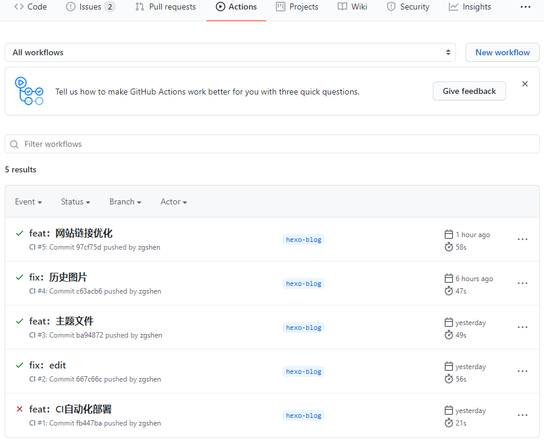

<!DOCTYPE html>
<html>
  <!DOCTYPE html>
<html lang="zh-CN">
<head><meta name="generator" content="Hexo 3.9.0">
  <meta http-equiv="content-type" content="text/html; charset=utf-8">
  <meta http-equiv="X-UA-Compatible" content="IE=Edge,chrome=1">
  
  <title>Github Actions deploy Hexo blog - zgshen&#39;s note</title>
  <meta name="viewport" content="width=device-width, initial-scale=1.0, maximum-scale=1.0, user-scalable=0">
  
  <meta name="keywords" content="博客">
  
  
    <link rel="shortcut icon" type="image/x-icon" href="/favicon.ico?v=1.02">
  
  
    <link rel="alternate" href="/atom.xml " title="zgshen&#39;s note" type="application/atom+xml">
  

  <link rel="stylesheet" href="/css/style.css">
</head></html>
  <body>
    <div class="container">
      <header class="header">
  <div class="blog-title">
    <a href="/" class="logo">zgshen&#39;s note</a>
    <div class="subtitle"></div>
  </div>
  <nav class="navbar">
    <ul class="menu">
      
        <li class="menu-item">
          <a href="/" class="menu-item-link">主页</a>
        </li>
      
        <li class="menu-item">
          <a href="/about" class="menu-item-link">关于</a>
        </li>
      
        <li class="menu-item">
          <a href="https://www.google.com/search?q=site:zguishen.com/" class="menu-item-link">搜索</a>
        </li>
      
    </ul>
  </nav>
</header>
<article class="post">
  <div class="post-title">
    <h1 class="article-title">Github Actions deploy Hexo blog</h1>
  </div>
   <div class="post-meta">
    <span class="post-time">2020-12-16</span>
  </div>
  <div class="post-content">
    <p><strong>新建分支或 git 库存放 Hexo 源文件</strong></p>
<hr>
<p>折腾一下把 Hexo 网站用 Github Actions 进行自动化部署，基本流程是这样的</p>
<p></p>
<ul>
<li>master：主干是原来的静态网站资源，也就是 hexo 编译后 public 下的文件；</li>
<li>hexo-blog：新建一个分支，放 hexo 的源文件，包括配置、主题和 markdown 文本等。</li>
</ul>
<p>流程就是我们写 markdown 文章后，就推送到 hexo-blog 分支，触发 Github Actions 进行自动化部署编译，并把编译完的资源推送到 master 分支，这就完成一次 Hexo 博客的更新。</p>
<p>这里用的是新建 hexo-blog 分支放 Hexo 源文件，新建一个 git 库也是可以，当然 Github Actions 也是在新建的 git 库上。</p>
<p><strong>配置公私密钥</strong></p>
<hr>
<p>因为涉及代码的 ssh 推送等交互，所以需要设置私钥和公钥。这里因为是用一个 git 库两个分支来做的，所以公私钥都在当前 git 库设置，如果用的是新建 git 库存放 Hexo 源文件，那私钥要放在 Hexo 源文件 git 库，公钥放在静态网站库上。</p>
<p>生成密钥</p>
<figure class="highlight bash"><table><tr><td class="gutter"><pre><span class="line">1</span><br></pre></td><td class="code"><pre><span class="line">ssh-keygen -t rsa -b 4096 -C <span class="string">"xx@xx.com"</span> -f github-deploy-key -N <span class="string">""</span></span><br></pre></td></tr></table></figure>
<p>生成两个文件：</p>
<ul>
<li><code>github-deploy-key.pub</code> 公钥</li>
<li><code>github-deploy-key</code> 私钥</li>
</ul>
<p>打开 <a href="https://github.com/xxx/xxx.github.io/settings/keys" target="_blank" rel="noopener">https://github.com/xxx/xxx.github.io/settings/keys</a> 填写公钥，xxx github 用户名</p>
<ul>
<li><code>Title</code> 输入 <code>HEXO_DEPLOY_PUB</code> （自定义名称，后面自动化部署脚本用到，一致就行）</li>
<li><code>Key</code> 输入生成的 <code>github-deploy-key.pub</code> 的内容</li>
<li>勾选 <code>Allow write access</code> 用于推送分支</li>
</ul>
<p>打开 <a href="https://github.com/xxx/xxx.github.io/settings/secrets/actions" target="_blank" rel="noopener">https://github.com/xxx/xxx.github.io/settings/secrets/actions</a> 填写私钥（新建git库方式私钥在新建git库上设置）</p>
<ul>
<li><code>Name</code> 输入 <code>HEXO_DEPLOY_PRI</code></li>
<li><code>Value</code> 输入生成的 <code>github-deploy-key</code> 的内容</li>
</ul>
<p><strong>自动化部署脚本</strong></p>
<hr>
<p>在 hexo-blog 分支根目录下创建 .github 文件夹再进去创建 workflows 文件夹再创建 HexoCI.yml 文件</p>
<p>编辑 HexoCI.yml 文件，内容找个别人的抄来用，<a href="https://blog.csdn.net/xinruodingshui/article/details/105499161#t4" target="_blank" rel="noopener">https://blog.csdn.net/xinruodingshui/article/details/105499161#t4</a></p>
<figure class="highlight yml"><table><tr><td class="gutter"><pre><span class="line">1</span><br><span class="line">2</span><br><span class="line">3</span><br><span class="line">4</span><br><span class="line">5</span><br><span class="line">6</span><br><span class="line">7</span><br><span class="line">8</span><br><span class="line">9</span><br><span class="line">10</span><br><span class="line">11</span><br><span class="line">12</span><br><span class="line">13</span><br><span class="line">14</span><br><span class="line">15</span><br><span class="line">16</span><br><span class="line">17</span><br><span class="line">18</span><br><span class="line">19</span><br><span class="line">20</span><br><span class="line">21</span><br><span class="line">22</span><br><span class="line">23</span><br><span class="line">24</span><br><span class="line">25</span><br><span class="line">26</span><br><span class="line">27</span><br><span class="line">28</span><br><span class="line">29</span><br><span class="line">30</span><br><span class="line">31</span><br><span class="line">32</span><br><span class="line">33</span><br><span class="line">34</span><br></pre></td><td class="code"><pre><span class="line"><span class="attr">name:</span> <span class="string">CI</span></span><br><span class="line"><span class="attr">on:</span></span><br><span class="line">  <span class="attr">push:</span></span><br><span class="line">    <span class="attr">branches:</span></span><br><span class="line">      <span class="bullet">-</span> <span class="string">hexo-blog</span> <span class="comment">##分支名</span></span><br><span class="line"><span class="attr">jobs:</span></span><br><span class="line">  <span class="attr">build:</span></span><br><span class="line">    <span class="attr">runs-on:</span> <span class="string">ubuntu-latest</span></span><br><span class="line"></span><br><span class="line">    <span class="attr">steps:</span></span><br><span class="line">      <span class="bullet">-</span> <span class="attr">name:</span> <span class="string">Checkout</span> <span class="string">source</span></span><br><span class="line">        <span class="attr">uses:</span> <span class="string">actions/checkout@v1</span></span><br><span class="line">        <span class="attr">with:</span></span><br><span class="line">          <span class="attr">ref:</span> <span class="string">hexo-blog</span> <span class="comment">##分支名</span></span><br><span class="line">      <span class="bullet">-</span> <span class="attr">name:</span> <span class="string">Use</span> <span class="string">Node.js</span> <span class="string">$&#123;&#123;</span> <span class="string">matrix.node_version</span> <span class="string">&#125;&#125;</span></span><br><span class="line">        <span class="attr">uses:</span> <span class="string">actions/setup-node@v1</span></span><br><span class="line">        <span class="attr">with:</span></span><br><span class="line">          <span class="attr">version:</span> <span class="string">$&#123;&#123;</span> <span class="string">matrix.node_version</span> <span class="string">&#125;&#125;</span></span><br><span class="line">      <span class="bullet">-</span> <span class="attr">name:</span> <span class="string">Setup</span> <span class="string">hexo</span></span><br><span class="line">        <span class="attr">env:</span></span><br><span class="line">          <span class="attr">ACTION_DEPLOY_KEY:</span> <span class="string">$&#123;&#123;</span> <span class="string">secrets.HEXO_DEPLOY_PRI</span> <span class="string">&#125;&#125;</span></span><br><span class="line">        <span class="attr">run:</span> <span class="string">|</span></span><br><span class="line">          <span class="string">mkdir</span> <span class="string">-p</span> <span class="string">~/.ssh/</span></span><br><span class="line">          <span class="string">echo</span> <span class="string">"$ACTION_DEPLOY_KEY"</span> <span class="string">&gt;</span> <span class="string">~/.ssh/id_rsa</span></span><br><span class="line">          <span class="string">chmod</span> <span class="number">600</span> <span class="string">~/.ssh/id_rsa</span></span><br><span class="line">          <span class="string">ssh-keyscan</span> <span class="string">github.com</span> <span class="string">&gt;&gt;</span> <span class="string">~/.ssh/known_hosts</span></span><br><span class="line">          <span class="string">git</span> <span class="string">config</span> <span class="string">--global</span> <span class="string">user.email</span> <span class="string">"zguishen@foxmail.com"</span></span><br><span class="line">          <span class="string">git</span> <span class="string">config</span> <span class="string">--global</span> <span class="string">user.name</span> <span class="string">"zguishen"</span></span><br><span class="line">          <span class="string">npm</span> <span class="string">install</span> <span class="string">hexo-cli</span> <span class="string">-g</span></span><br><span class="line">          <span class="string">npm</span> <span class="string">install</span></span><br><span class="line">      <span class="bullet">-</span> <span class="attr">name:</span> <span class="string">Hexo</span> <span class="string">deploy</span></span><br><span class="line">        <span class="attr">run:</span> <span class="string">|</span></span><br><span class="line">          <span class="string">hexo</span> <span class="string">clean</span></span><br><span class="line">          <span class="string">hexo</span> <span class="string">d</span></span><br></pre></td></tr></table></figure>
<p><strong>构建结果</strong></p>
<hr>
<p>Actions 里可以看到每次构建流程，失败的可以进去查看日志定位问题。</p>
<p></p>

  </div>
  <div class="post-footer">
    
      <ul class="post-tag-list"><li class="post-tag-list-item"><a class="post-tag-list-link" href="/tags/博客/">博客</a></li></ul>
    

    <a href="#top" class="top">返回顶部</a>
  </div>
</article>
<footer>
  &copy; 2021
  <span class="author">
    zguishen
  </span>
</footer>
    </div>
	<script async src="https://www.googletagmanager.com/gtag/js?id=GA_MEASUREMENT_ID"></script>
	<script>
	  window.dataLayer = window.dataLayer || [];
	  function gtag(){dataLayer.push(arguments);}
	  gtag('js', new Date());
	  gtag('config', 'UA-106347761-1');
	</script>
  </body>
</html>